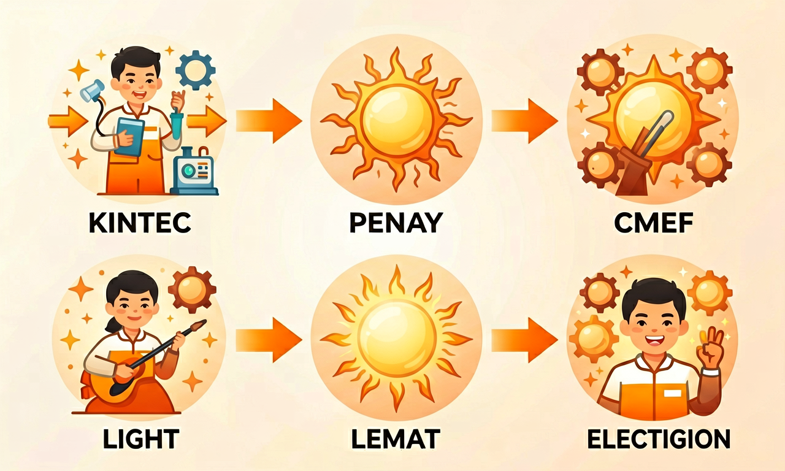
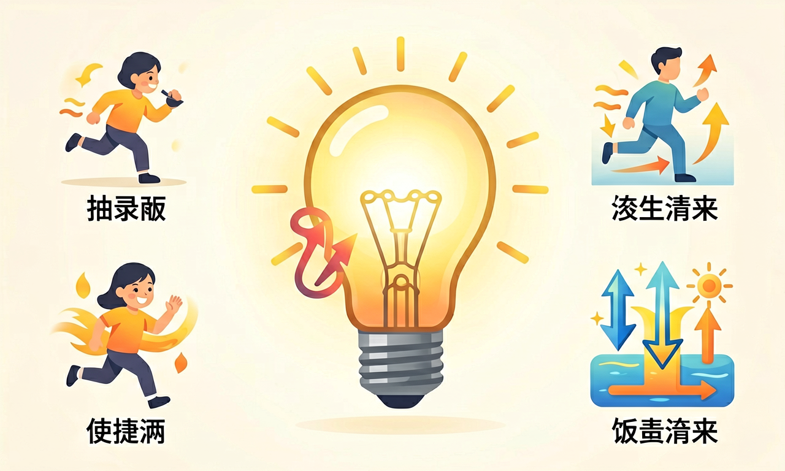

能量的多种形式：会变身的小精灵
太阳为什么能照亮大地？电池为什么能让小风扇转起来？今天我们来认识会"变身"的能量。

今天你最想弄懂哪个问题？
选择或输入后，这节课会围绕你的问题展开。
学习目标
- 能说出动能、势能、热能、光能、电能、化学能并举出生活实例
- 能描述运动的物体具有动能，举高或形变的物体储存势能
- 能解释能量从一种形式转化为另一种形式的过程
- 能初步说明热传递的传导、对流、辐射并举例
课前小诊断
小朋友把橡皮筋拉长后松手，橡皮筋弹回去。橡皮筋被拉长时主要储存了哪种能量？
先选一个，错了正好暴露你的前概念。
能量有哪些"面孔"？
自然界里，能量有很多种"面孔"。动能藏在运动的物体里——奔跑的人、行驶的汽车都有动能。势能藏在位置或形变里——举高的重物、拉长的橡皮筋都储存了势能。
热能让物体变热；光能来自太阳和电灯；电能在电线和电池里流动；化学能储存在食物、煤炭、汽油中。科学家说：能量可以从一种形式转化成另一种，但不能凭空产生，也不能凭空消失。

势能怎么变成动能？
在「能量滑板公园」里，把运动员拖到高处再松手。观察：高度（势能）减少时，速度（动能）怎样变化？
💡 试试打开「能量图」和「速度」显示，对照本课六种能量形式。
动手归类：这些现象属于哪种能量？
把下方现象拖到对应的能量桶里（可触摸拖动）。全部归对后查看反馈。
动能
势能
热能
光能
电能
化学能
拖完 6 个现象后自动判分。
热是怎么传过来的？
当能量以热能形式传递时，科学家总结了三种方式：传导（固体直接接触传热，如铁勺烫手）、对流（液体或气体流动带走热量，如热水上升）、辐射（不需要介质，如太阳光照到地球）。热总是从温度高的地方传向温度低的地方。
再看电能：插座里的电能流入电灯，一部分变成光能让我们看见，另一部分变成热能让灯泡发热——所以节能灯比白炽灯更省电，因为它把更多电能变成了光能，而不是浪费成热能。

用学到的知识解释
解释题：夏天在阳光下，黑色柏油路面比白色墙面摸起来更烫。请从"光能→热能"和"热传递"角度解释这个现象。
提示：太阳光带来光能，深色表面吸收更多光能并转化为热能，路面温度升高。你用手触摸时，热通过传导从高温的路面传向低温的手。如果只写"黑色吸热"却没点明能量转化形式，说明还需巩固。
判断题：小华说"电风扇转起来后，电能消失了，变成了风"。这句话哪里不对？请改正。
达标检测
水电站用流动的水推动发电机发电。在这个过程中，能量转化的主要顺序是？
选一个并查看反馈。
🧠 知识图谱：能量的多种形式：会变身的小精灵
这节课我们学会了
迁移任务：观察家里一件用电器（如台灯、电饭煲、手机充电），画出它的能量转化链，并标出至少两种能量形式。